UIUX designer · Qiu
“I continuously improve myself through practice and learning. I love exploring global cultures and have traveled to the West, Russia, the Middle East, and East Asia. This diverse background allows me to better understand the user experience needs of different cultures.
I have worked for domestic and international companies, ranging from tech giants to startups, and have been deeply involved in visual design, interaction design, user research, front-end development, and social media creation.
My goal is not only to create the best user experience but also to help companies achieve business growth.”
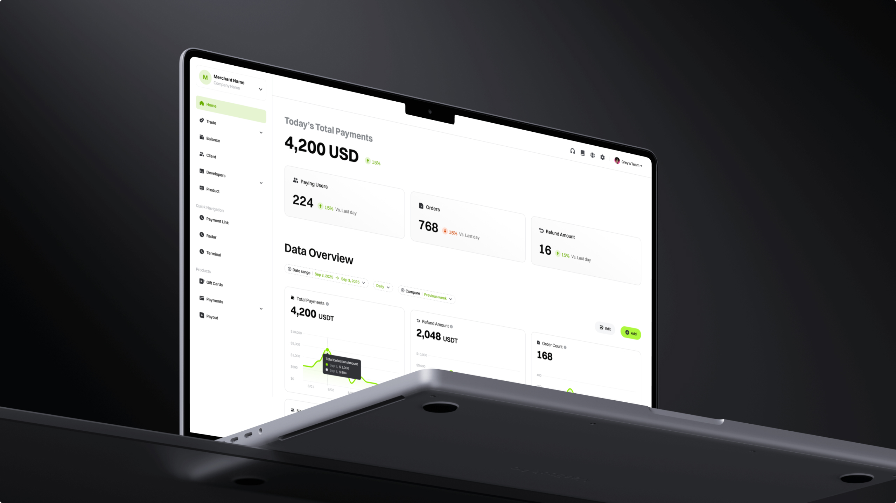
Brand identity · Product design
A comprehensive Web3 merchant platform unifying payment collection, deposits and withdrawals, payouts, role-based access management, and a developer-facing API surface. The brand pairs a confident lime accent with a quiet, near-black canvas — a system tuned for clarity at every density, from a single transaction row to the full ledger.
View project details ↗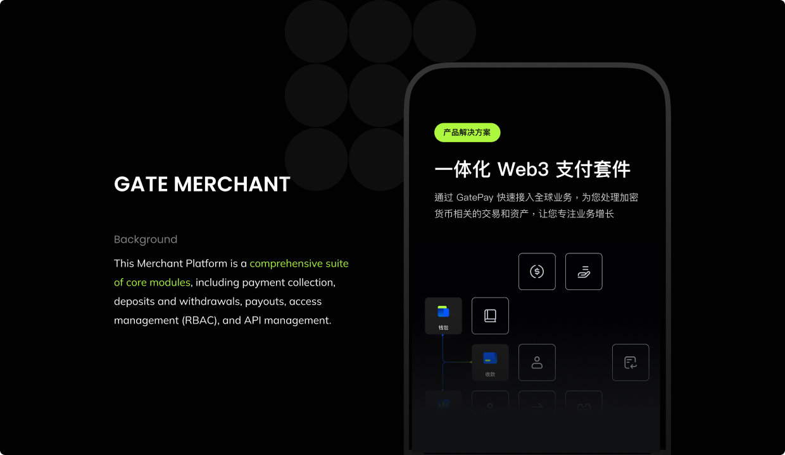
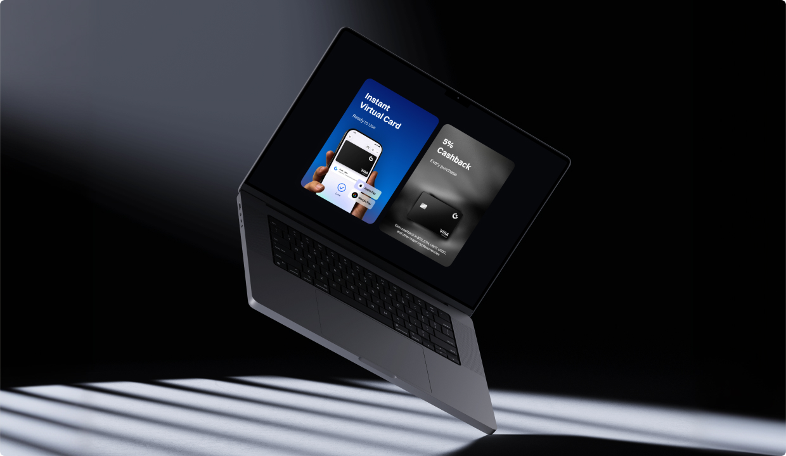
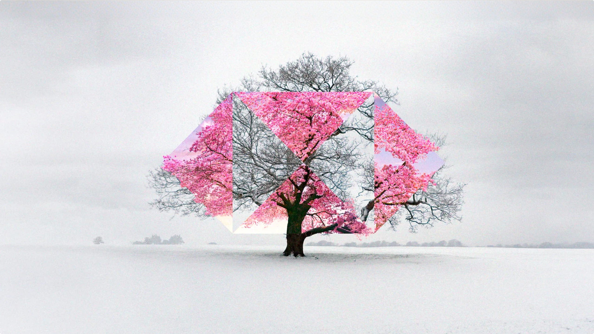
Brand identity · Visual system
An identity built around motion: the wordmark traces the clipper’s looping orbit as it dips in and out of Jupiter’s radiation belt to gather samples from the icy moon. The mark scales from launch-vehicle livery down to mission-control telemetry — one continuous gesture that survives 1.8 billion miles of context.
View project details ↗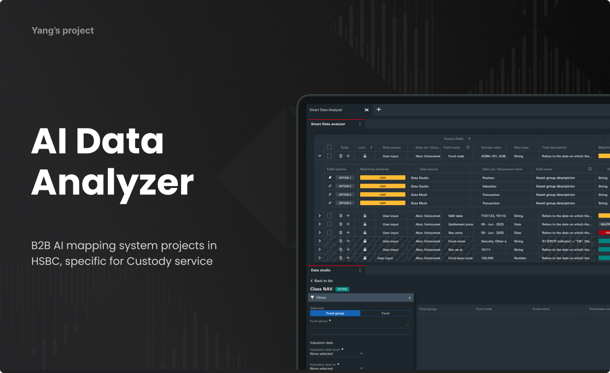
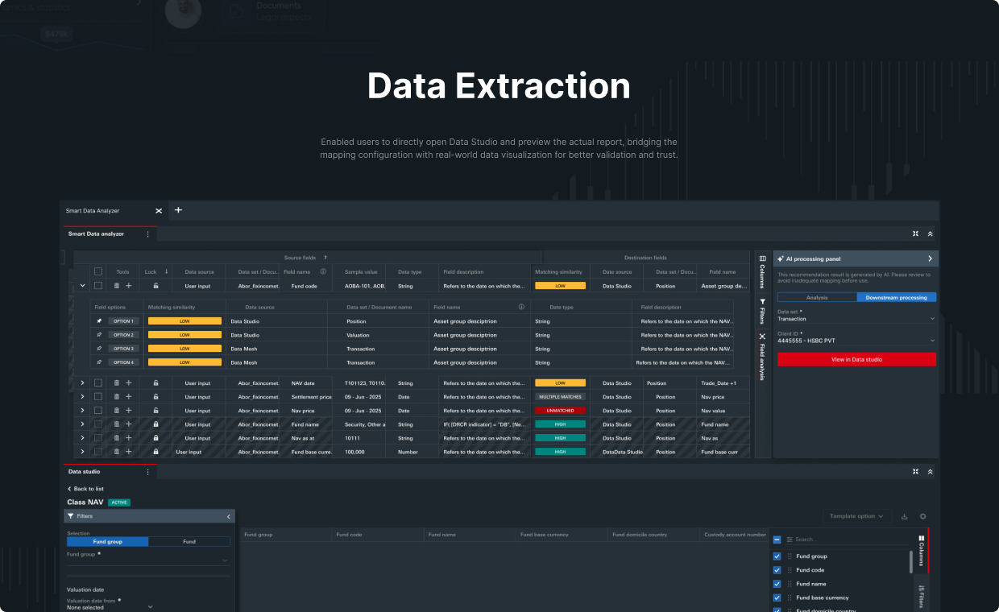
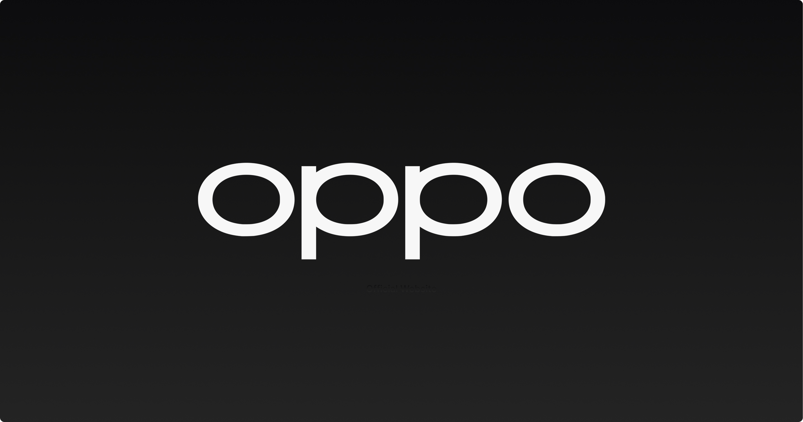
Product design · User research
An end-to-end rethink of OPPO’s online retail experience for the Indonesian market. Field research with local buyers reframed the purchase funnel around price-anchored discovery and creator-led social proof, lifting checkout intent and stitching the official site into the rest of the brand’s regional ecosystem.
View project details ↗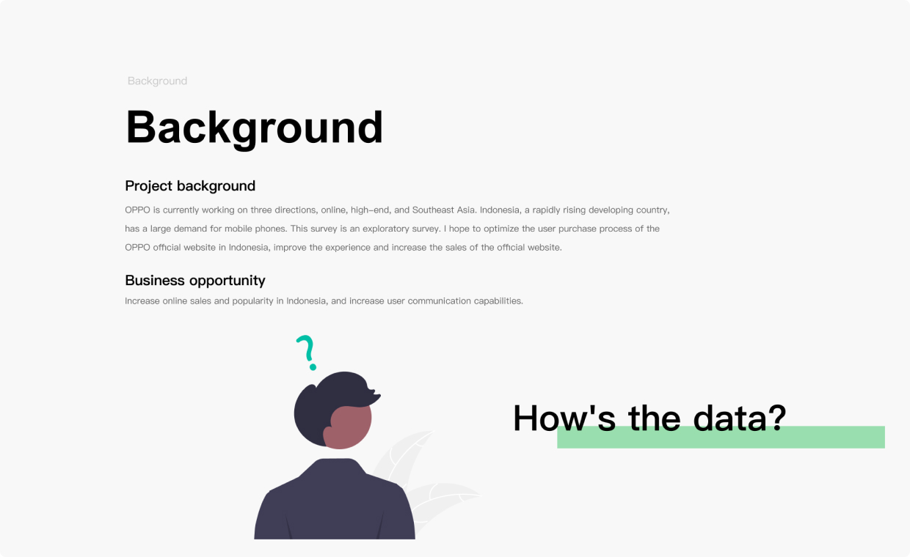
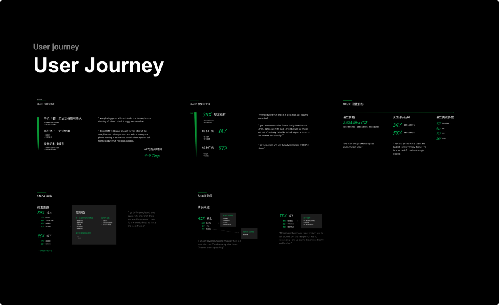
Product design · Visual design
A K-12 live classroom built around three core surfaces: 1-on-1 tutoring, animated lessons, and group live class. The home screen is composed of large, tappable cards anchored by a persistent “continue learning” dock — a layout that honours short attention spans and rewards return visits without ever feeling cluttered.
Visit the case study ↗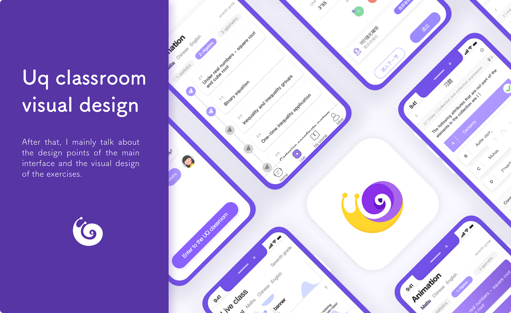
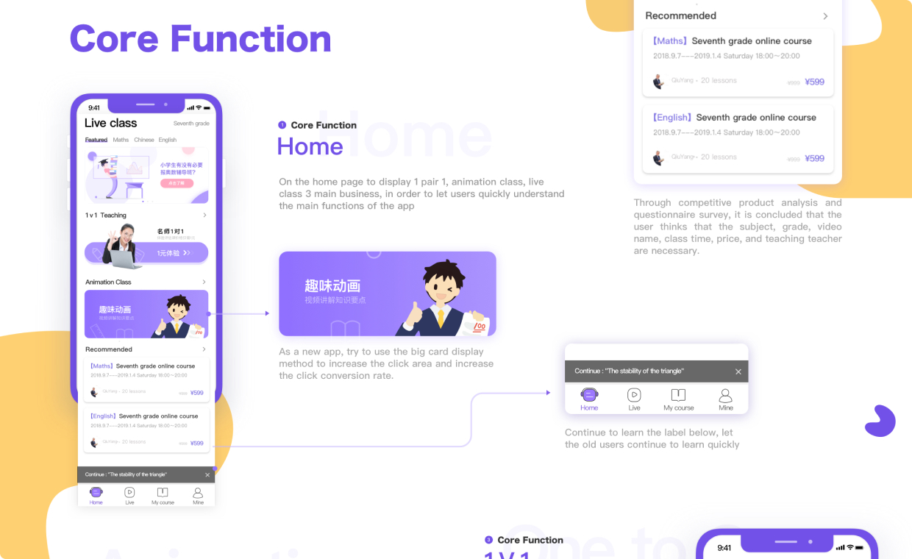